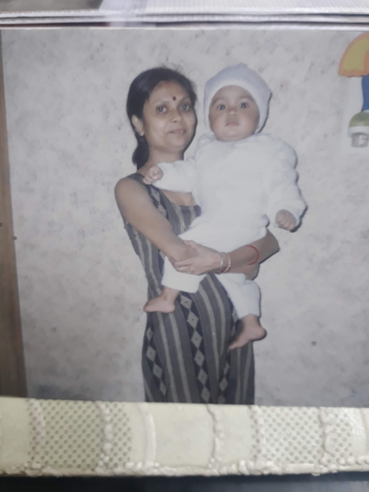

My Life in Chapters
The journey from an imaginative kid in Assam to building products from chaos.
Origins & Early Curiosities
I was born in Silchar, Assam, but grew up in Delhi, completing my schooling at Pragati Public School in Dwarka. I was a kid full of life, diagnosed with ADHD, and had an extreme love for playing cricket. My friends found me quite humorous and funny.
Growing up, I naturally gravitated towards Science and Mathematics because they allowed me to imagine things. If I could imagine it, I was interested. I vividly remember learning that we see things because light reflects off objects into our eyes. I immediately asked: “If that’s true, how can we directly see a light source if it's an object itself?” When I learned that eyes can see both reflected and emitted light, it sparked an inner curiosity that never really faded.
By 6th grade, I was already helping 8th graders study for their science and math exams. I always wanted to learn more and share. Outside the classroom, I channeled my energy into sports—captaining the school basketball team from 6th to 12th grade, serving as House Prefect (2014-15), and eventually House Captain (2016-17).

The "Work for Free" Freshman
I entered the startup ecosystem as a college freshman, driven entirely by curiosity and a desire to understand how businesses are built from the ground up.
Having zero experience didn't stop me. I started cold emailing founders, offering to work for free. My pitch was straightforward: “Let me work — if I deliver, we’ll talk about compensation later.” This proactive strategy opened doors, allowing me to intern at multiple early- and mid-stage startups. I wore many hats, gaining hands-on experience across growth, tech, and product.
Over time, I realized I was much more drawn to figuring out what should be built rather than how to build it. That realization was my gateway into Product Management.
GenWise: Empathy at Scale
Joining GenWise was a major turning point in both learning and ownership. I realized I had a knack for talking to and deeply understanding people in my parents' generation with genuine empathy.
I even became one of the highest-rated "Saathi" (companions) on the platform because I genuinely loved talking to the users. Over the course of 2.5 years, I spoke with more than 1,000 users. Those conversations shaped my approach to product: listening first, analyzing second.
Habuild: Building from Chaos
At Habuild, my experience completely flipped. Moving from a highly structured role into a completely unstructured one in the Founder's Office has been a roller coaster ride.
I’ve made hundreds of mistakes but learned thousands of lessons from them. Taking complete ambiguity and forging a structured thought process out of it is the most valuable learning I will carry forward from this experience.
Side Quests & Deep Dives
While I didn't build many personal software projects because I was always deeply involved with startups directly, I spent my free time obsessively doing product case studies. Here are a few deep dives I wrote: